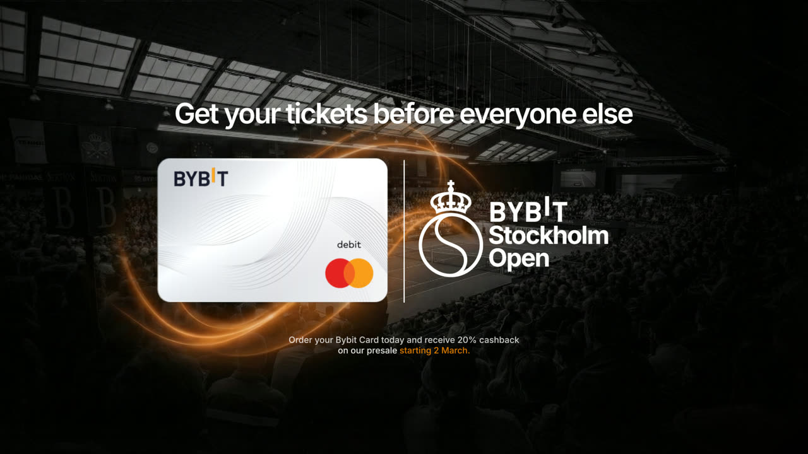
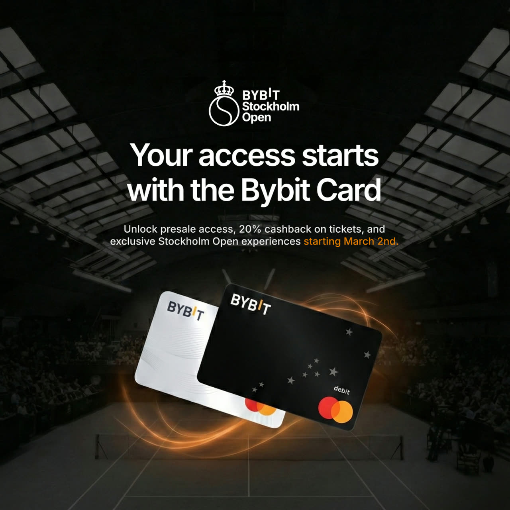
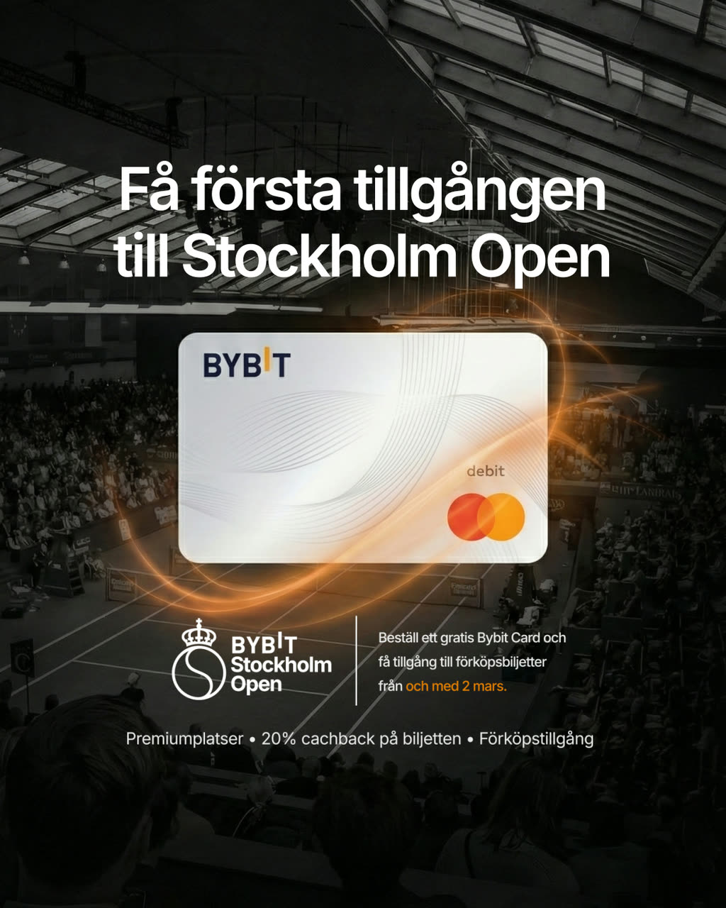
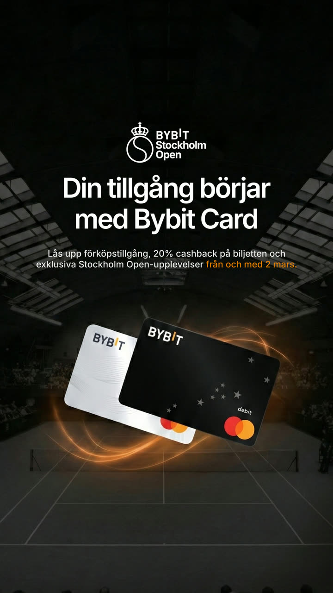

Ad + Social Campaign
Two campaigns. One global brand.
We gave Bybit EU the visuals for their three-year reign over Stockholm's most historic tennis tournament and the ad campaign that put the Bybit Card in front of Europe.
Overview
When a brand with more than 80 million users and a position as the world's second-largest crypto exchange goes looking for creative, the work has to do more than look good.
It has to hold up next to a global ATP tennis tournament and a financial product used by millions — in front of an audience of both serious investors and complete newcomers. Hano Animations produced two of Bybit EU's ad campaigns: the visual campaign for their tennis title sponsorship and the European campaign for the Bybit Card.
The Stakes In Numbers
- 80M+
- Bybit users worldwide
- #2
- Largest exchange by volume
- 3M
- Bybit Card cardholders
- ~30k
- Stockholm Open spectators
Bybit Stockholm Open
In February 2026, Bybit EU was named the title partner of the Stockholm Open, entering a three-year agreement that would see the tournament play under the name Bybit Stockholm Open from 2026 through 2028. As part of the deal the tournament reclaimed its classic, historic name — a detail that mattered enormously to the people who have followed it for decades.
Founded in 1969 by former world-class player Sven Davidson, the Stockholm Open runs every year at the Royal Tennis Hall, draws roughly 30,000 spectators, and sits on the ATP Tour — broadcast worldwide. The 2026 edition saw Casper Ruud return as defending champion. Its audience overlaps almost perfectly with Bybit's ideal client: people with a serious interest in finance and the long game.
What we made
This is where our two strengths met in a single campaign: real crypto expertise and high-impact animation. With the brand and the offer already defined, we could put the full focus on the craft — animating the Bybit Card as the hero of every frame, lit against a packed arena and wrapped in the official Bybit Stockholm Open identity, to polish a premium financial product.
The creative tied the card directly to the tournament: presale ticket access, 20% cashback on tickets, and exclusive Stockholm Open experiences reserved for cardholders. Produced in English and Swedish for the Nordic launch and sized for every placement, it carried one promise through every frame: your access starts with the Bybit Card.




Bybit Card Campaign
The second campaign was for the Bybit Card — a product that has passed three million users and become one of the fastest-adopted crypto cards in the world, used for travel, groceries, dining, and everyday retail.
Separate from the tournament push, we created the video campaign around the Bybit Card. Rather than show it as crypto infrastructure, we dropped the card into real lifestyle moments and gave each spot the weight of a premium brand film — concepting and animating ads that made the product feel less like a wallet and more like a way to live. This was animation-led work, where the motion and the storytelling did the selling.
Every concept was animated and adapted into four formats for all major platforms — one idea, one consistent visual language, running cleanly across every screen it touched. A single concept became a full, polished matrix of deliverables, instantly recognizable as Bybit wherever it appeared.
Social Media
Besides the two campaigns, we handled a run of social content for Bybit EU — and this is where animation does the heavy lifting on its own. They filmed their talking-head clips and sent them to us raw. We rebuilt them in motion — graphics, on-screen visuals, and a rhythm engineered to stop the thumb and carry the viewer all the way to the last frame.
Then we took it inside the product. We built videos around clean UI animation of the Bybit app and website, recreating every screen and every tap as motion, so a first-time user understands exactly how it works before they ever download anything.
None of it chases a viral moment. Instead, it makes Bybit feel as considered in the feed as it is in the product, frame after frame.
Why It Matters
Bybit is where everything we'd built for ourselves got put to the test. With Hano Crypto, we'd already proven we understand this space deeply enough to make it land with hardened traders and total newcomers in the same breath. Bybit asked the same question at a far bigger scale — a global brand, a financial product in millions of hands, two languages, every platform.
Because the thread never changes: crypto expertise plus genuine craft. Designers who don't know crypto make work that looks beautiful and says nothing. People who only know crypto make work that's accurate and instantly forgotten. The rare thing is both at once — and that's the entire reason we exist.